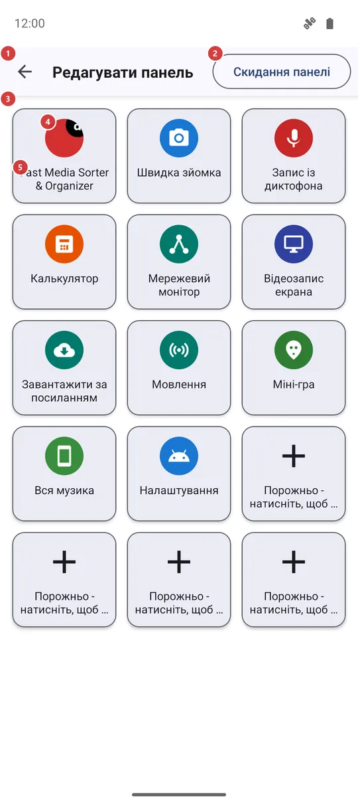
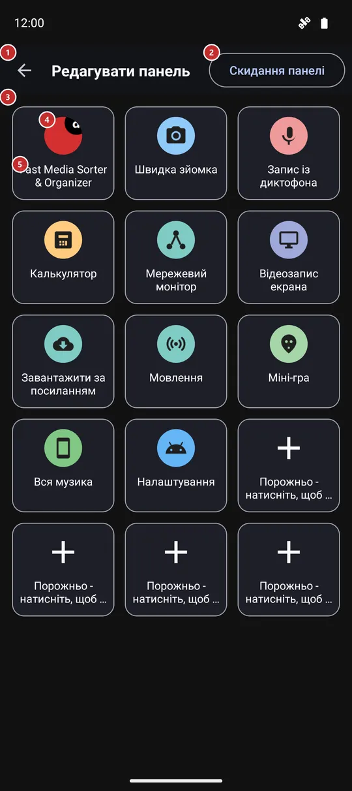

Редагувати панель
Для чого цей екран
Виберіть, що показує панель «Швидкий запуск». На панелі п’ятнадцять сталих місць; тут ви заповнюєте кожне застосунком, інструментом FastMediaSorter, одним із ваших ресурсів або екраном налаштувань Android, а також можете міняти плитки місцями й очищати їх.


Порядок дій
- Сюди потрапляють кнопкою «Змінити» на панелі «Швидкий запуск», натисканням на вільне місце на ній або з налаштувань жестів краю екрана. Сітка 3 показує панель у її теперішньому вигляді.
- Натисніть вільне місце 5 або будь-яку плитку 4. Вікно «Додати на панель» 9 запитає, який ярлик потрібен: застосунок, функція FastMediaSorter, ресурс FastMediaSorter чи налаштування Android.
- Відкриється список вибраного виду (11-14). Натисніть потрібний пункт, і він одразу стане на місце. У короткому списку поля пошуку немає, у довгому воно з’являється 10.
- Щоб змінити плитку, що вже стоїть, натисніть на неї й утримуйте: «Перемістити» 6 міняє її місцями з іншим місцем, «Замінити» 7 знову відкриває вибір виду, «Видалити» 8 звільняє місце.
- «Скидання панелі» 2 після підтвердження повертає типовий набір. «Назад» 1 закриває екран - кожна зміна зберігається одразу.
Елементи
Верхня панель
1НазадЗакриває екран і повертає до панелі.
Зберігати нічого: кожна зміна записується одразу, а панель покаже її під час наступного відкриття.
2Скидання панеліПовертає панель до набору, який був після встановлення.
Застосунок питає «Скинути панель?» і пояснює, що панель повернеться до типового набору програм і ярликів, як після встановлення. Доки ви не підтвердите, нічого не змінюється. Типовий набір - це спершу FastMediaSorter, потім його власні інструменти, що є у вашій редакції, один із ваших ресурсів і налаштування Android, а останні місця лишаються вільними.
- Скасування
- Усі ваші плитки зникають, і повертається типовий набір. Щоб повернути плитку, додайте її знову.
Сітка плиток
3Сітка плитокП’ятнадцять сталих місць панелі.
У сітці три стовпці у вузькому вікні та п’ять у широкому - як і на самій панелі. Кількість місць змінити не можна. Кожне місце - це або плитка зі значком і назвою, або вільне місце з плюсом. Під час відкриття екрана фокус клавіатури й D-pad переходить на сітку.
4ПлиткаЯрлик, який уже є на панелі.
Натисніть, щоб замінити: вікно «Додати на панель» відкриється для того самого місця, і вибране стане замість попереднього. Натисніть і утримуйте, щоб відкрити меню «Перемістити», «Замінити», «Видалити». Значок показує, що відкриє плитка: у застосунку лишається власний значок, а в інструментів і налаштувань - свої.
5Порожньо - натисніть, щоб додатиВільне місце, що чекає на ярлик.
Натисніть або натисніть і утримуйте - тут це одне й те саме, - і відкриється вікно «Додати на панель». Місце лишається вільним, доки ви нічого не виберете.
Меню плитки (довге натискання)
6ПереміститиПереносить плитку на інше місце.
Відкриється список місць із номерами від 1 до 15. Виберіть потрібний номер. Якщо на цьому місці вже є плитка, плитки поміняються місцями; якщо воно вільне, плитка просто переїде. «Скасувати» залишає все як було.
7ЗамінитиСтавить на це місце щось інше.
Відкриває те саме вікно «Додати на панель», що й натискання на плитку. Новий вибір займає місце попереднього; стара плитка не зберігається.
8ВидалитиЗвільняє місце.
Плитку одразу знімають із панелі, без запитання, і місце знову вільне. Застосунок, інструмент чи ресурс, на які вона вказувала, не зачіпаються.
- Скасування
- Повернути плитку кнопкою скасування не можна. Додайте її знову на вільне місце або скористайтеся «Скиданням панелі», щоб отримати типовий набір.
Вікно «Додати на панель»
9Додати на панельПитає, який ярлик поставити на це місце.
Короткий список із чотирьох варіантів: «Застосунок», «Функція FastMediaSorter», «Ресурс FastMediaSorter» і «Налаштування ОС Андроїд». У кожного свій список. «Скасувати» закриває вікно, нічого не змінюючи. Те саме вікно відкривається й під час «Замінити».
10Введіть для пошукуЗвужує довгий список під час введення.
У поля є кнопка очищення, і воно з’являється, лише коли список довший за вікно; у короткому списку поля немає. Введіть частину назви, і рядки звужуються просто під час введення. Якщо нічого не підходить, у списку написано «Нічого не знайдено». У всіх чотирьох списках нижче пошук працює однаково.
11Виберіть програмуСписок застосунків, які можна закріпити плиткою.
Показує встановлені на телефоні застосунки, які можна запустити, за абеткою й кожен зі своїм значком. Натисніть один, і він стане на місце. Якщо потім видалити цей застосунок з телефона, його плитка нічого не відкриє.
12Вибір функціїСписок інструментів і екранів самого FastMediaSorter.
Показує те, що є у вашій редакції, наприклад калькулятор, секундомір, мережевий монітор, міні-гру, «Потоки» й «Обране»; спершу йдуть інструменти, потім решта. Інструмент, вимкнений у налаштуваннях, лишається в списку з позначкою «Вимкнено - натисніть, щоб увімкнути»; плитка з ним відкриває відповідне налаштування замість інструмента. Функцій, яких немає у вашій редакції, у списку не показано.
13Вибір налаштування ОС АндроїдСписок екранів налаштувань Android, які можна закріпити.
Показує лише ті екрани, які телефон справді може відкрити: «Налаштування», Wi-Fi, Bluetooth, «Дисплей», «Звук», «Батарея», «Сховище», «Про застосунок», «Дата і час» та, якщо вони є в телефоні, «Для розробників», «Економія заряду», «Автообертання», «Спеціальні можливості», «Бездротові мережі», «Передача даних», NFC, VPN, «Геолокація» і «Точка доступу». Екрана, якого немає у вашому телефоні, у списку просто немає.
14Вибір ресурсуСписок ваших ресурсів, які можна закріпити.
Показує ваші ресурси за назвою, кожен зі значком свого типу - тека на пристрої, мережева тека чи хмара. Одна плитка вказує на один ресурс; пізніше натискання на плитку на панелі відкриває цей ресурс у браузері файлів.